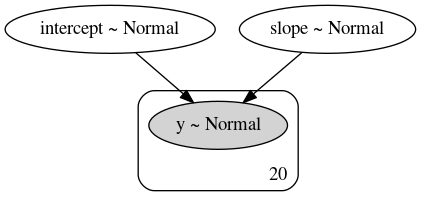

Tidy and beautiful
Visualizing Bayesian models with xarray and ArviZ

|

|
Colin Carroll, PyData NYC |
| October 17, 2018 |
What is Bayesian Inference?
$$ P(\theta | X) = \frac{P(X | \theta) P(\theta)}{P(X)} $$

Point Estimates


Uncertainty


Uncertainty


How are Uncertainty Estimates Stored?
| Library | Methods on fit object | Favorite method name | Can you save? | Can you pickle? |
|---|---|---|---|---|
| PyMC3 | 96 | _old_theano_config | Sort of | Yes |
| PyStan | 46 | module_bytes | No | Yes, with model |
| emcee | 59 | _propose_stretch | No | Yes |
| Pyro | 42 | _abc_negative_cache_version | No | If you delete some things |
What is the goal?


We want pandas!

...high-dimensional pandas!

xarray